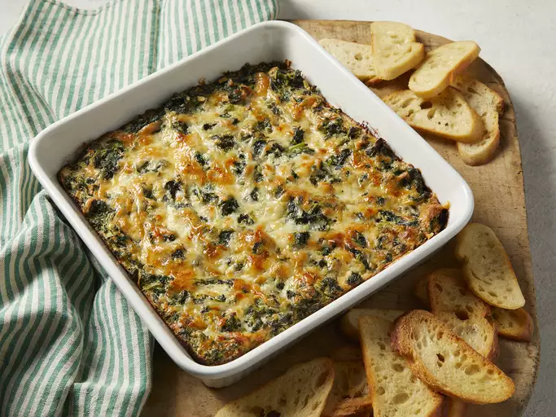
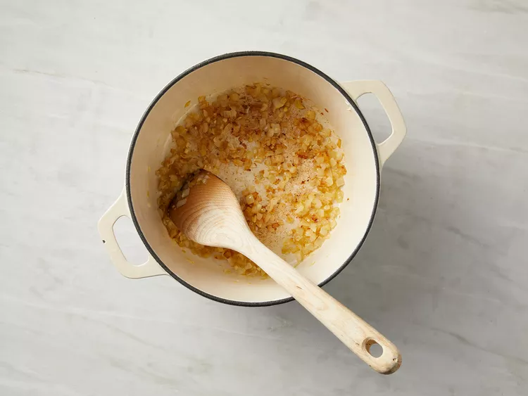
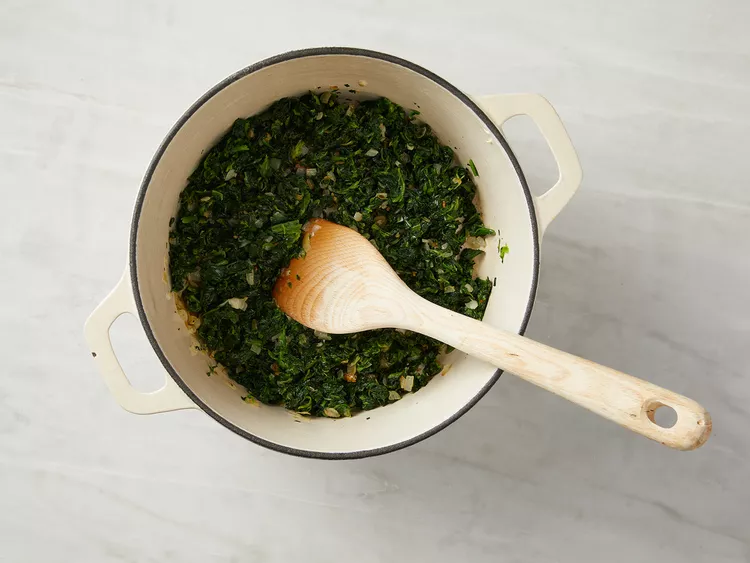
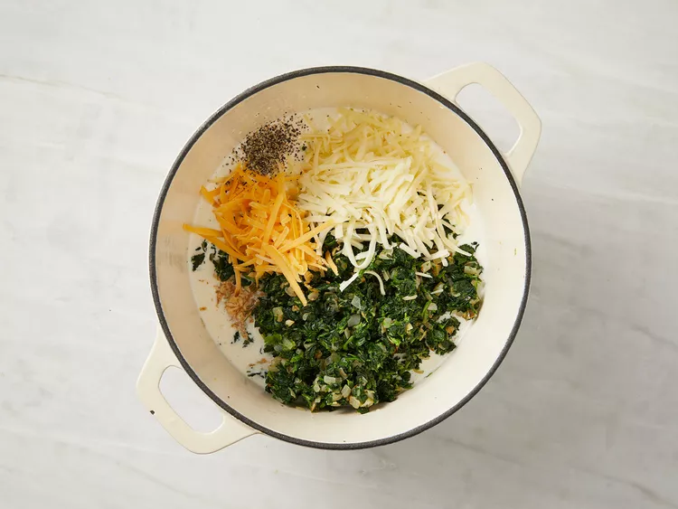
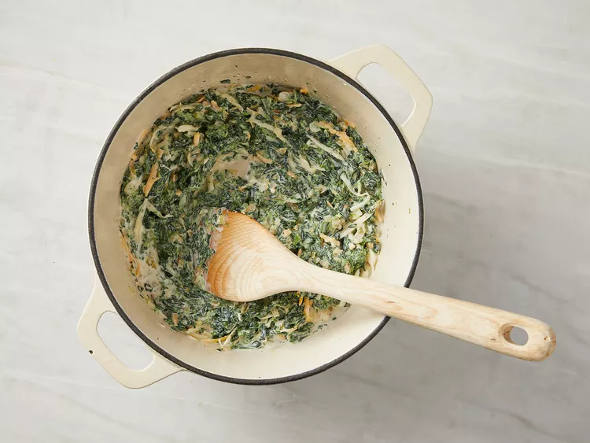
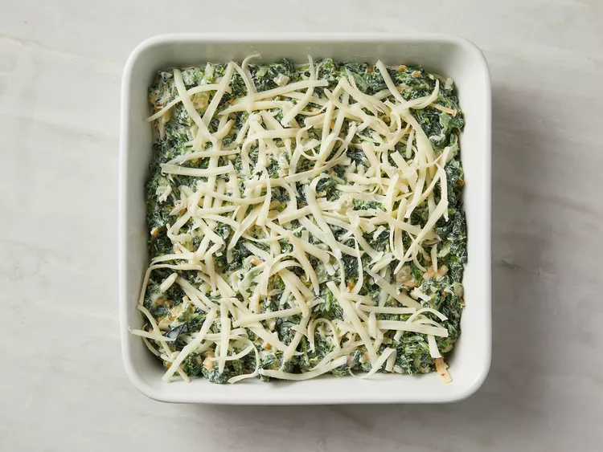

Home
Spinach Dip Recipe

Description
This hot spinach dip is rich, cheesy, and incredibly delicious—without the usual mayo or sour cream. Every time I make it, people ask for the recipe! If you prefer a milder flavor, you can swap out the Cheddar for another cheese or omit it entirely. I like using Cheddar because it adds both color and extra flavor.
Ingredients
- 1 tablespoon olive oil, dividied
- 1 small onion, finely chopped
- 2 cloves garlic, minced
- 2 (10 ounce) packages frozen spinach - thawed, drained, and chopped
- 1/2 cup milk
- 6 ounces cream cheese
- 1 cup shredded mozzarella cheese, divided
- 1/4 cup shredded Cheddar cheese
- 2 dashes Worcestershire sauce
- salt and ground black pepper to taste
Steps
- Preheat the oven to 425 degrees F (220 degrees C). Grease a 1 1/2-quart shallow baking dish with 1 teaspoon olive oil.
- Heat 2 teaspoons olive oil in a large pot over medium heat. Cook and stir onion and garlic in hot oil until lightly browned, 4 to 7 minutes.

- Add spinach and simmer until spinach is hot, about 5 minutes. Drain any liquid from the mixture and transfer to a bowl.

- Pour milk into the pot and return it to medium heat. Melt cream cheese into milk; cook and stir together, about 3 minutes. Return spinach mixture to pot with 1/2 cup mozzarella cheese and Cheddar cheese; stir to combine. Season with Worcestershire sauce, salt, and pepper.


- Pour the mixture into the prepared baking dish and top with remaining 1/2 cup mozzarella cheese.

- Bake in the preheated oven until bubbly and golden brown on top, 20 to 25 minutes.